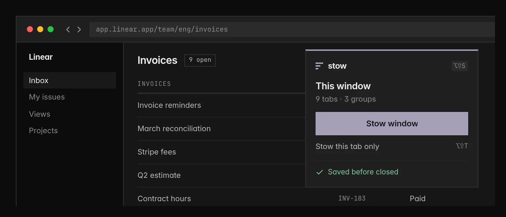
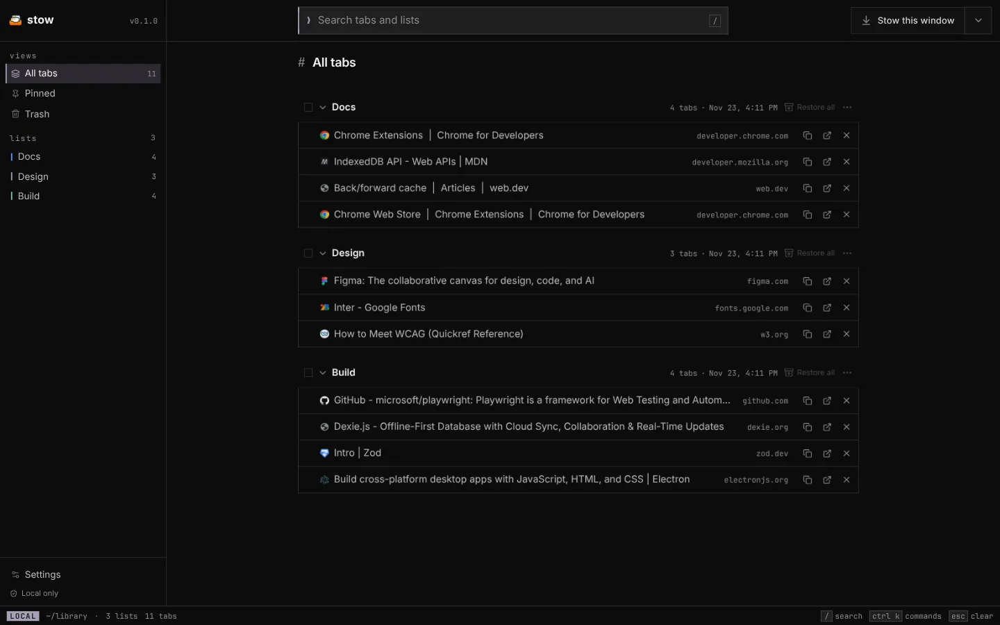
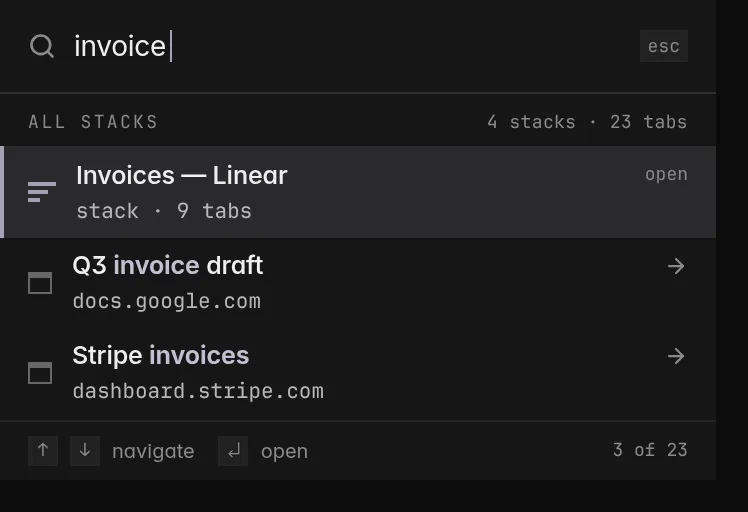
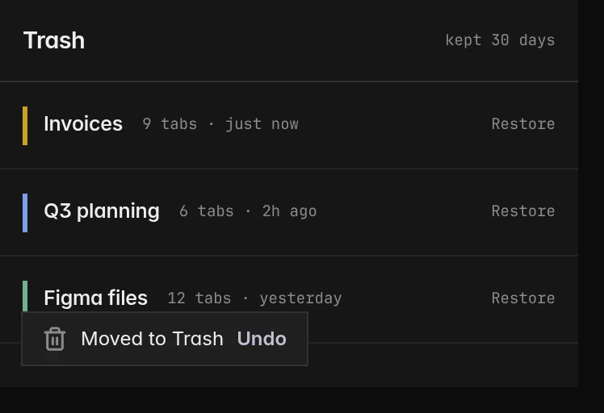
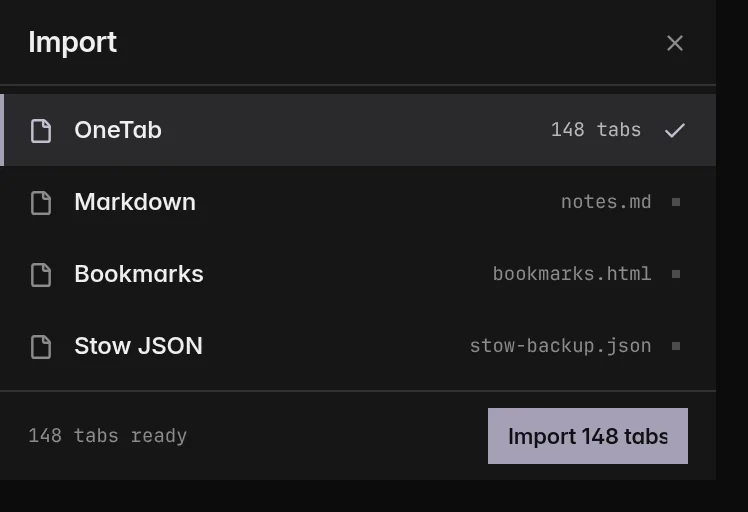
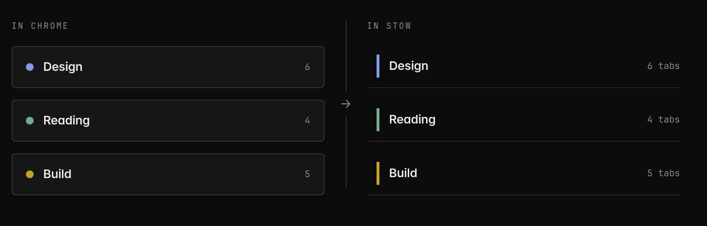

stow
Save the whole window.
One keystroke turns every tab into stacks, sorted by the groups you already made. Pinned tabs stay open.

⌥⇧Sstow window ⌥⇧Tstow tab
❯ stow --save
Stow saves a whole window as searchable stacks, closes every tab, and brings back exactly what you need. Local-first. No account, no sync, no network.
Chrome 120+ · works offline after install

01 / the parts
Stow is one gesture and one search box. Everything else exists so nothing gets lost on the way back.
stow
One keystroke turns every tab into stacks, sorted by the groups you already made. Pinned tabs stay open.

⌥⇧Sstow window ⌥⇧Tstow tab
quiet by default
0
network requests
No account, sync, telemetry, or favicon service. The extension asks for no host permissions.
find
Search titles, URLs, and stacks as you type. Typos are fine; domain:
narrows it down.

⌘Kfrom anywhere
safe
Every tab is written and read back first. Change your mind and Trash holds it for 30 days.

undo from the toast, or restore from Trash
move in
Import OneTab, Markdown lists, bookmarks, or a Stow backup. Export the same library whenever you want.

no lock-in
groups
Native names, colors, and pinned tabs survive the trip. Restore a stack into the shape it left in.

Chrome tab groups · recreated on restore
keyboard
Stow, search, restore, and rename without reaching for the mouse.
⌥⇧Sstow window
⌥⇧Tstow tab
⌥⇧Lopen library
⌘Ksearch
02 / the ledger
There is no server to send it to. Stow requests no host permissions and makes no network calls.
| Data | Lives in | Leaves device |
|---|---|---|
| Tabs and stacks | IndexedDB, extension origin | No |
| Settings | IndexedDB + two localStorage mirrors | No |
| Favicons | Chromium’s local _favicon cache |
No |
| Backups | Your Downloads folder, only if enabled | No |
Uninstalling removes the data. Export a JSON backup first if you want a copy.
03 / install
Grab stow-0.1.0-chrome.zip from the
latest release.
Enable Developer mode at chrome://extensions.
Choose Load unpacked and select the unzipped folder.